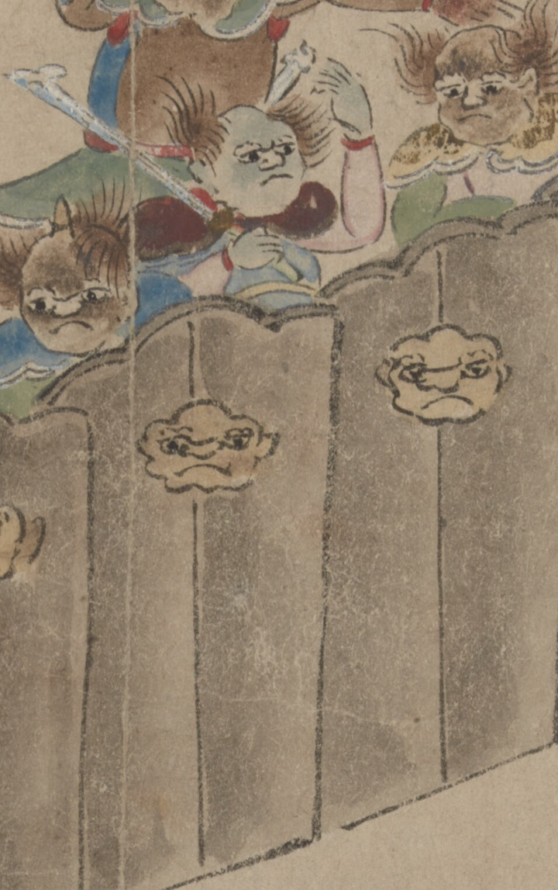

← 图鉴索引

手に刀のようなものを持ち、、顔のついた盾で降ってくる矢をしのいでいる鬼。
出典：親書誌：U426_nichibunken_0454：[鬼退治絵巻]／日付：2024／資源識別子：U426_nichibunken_0454_0001_0009
Copyright (c)2010- International Research Center for Japanese Studies, Kyoto, Japan. All rights reserved.